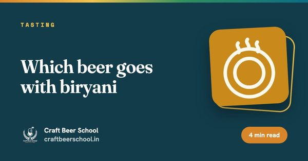
Tasting
Which beer goes with biryani
A hoppy IPA with Hyderabadi biryani feels like a dare. Here is what actually works, plate by plate.
Read
4 min
Written by brewers who actually run the numbers, for people learning beer in India. Start with the door that fits you.

A hoppy IPA with Hyderabadi biryani feels like a dare. Here is what actually works, plate by plate.

It smells like a bonfire and a lager had an argument. Smoked beer starts with the malt, not the finished brew.
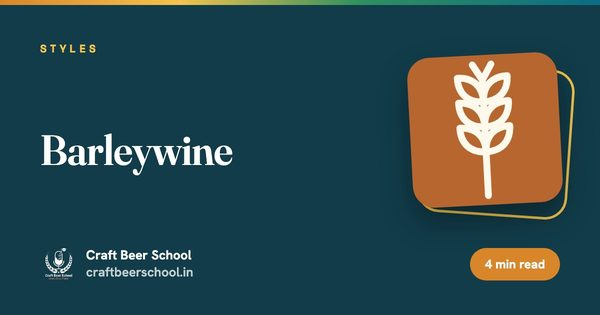
Wine strength from a mash tun. Barleywine is built to be bottled, forgotten and rediscovered years later.

Four ingredients, one process, and a lot of marketing noise. Here is what the word actually means.

Ale or lager is only the first fork in the road. Here is the map of everything after it.

Drinking is not tasting. A method turns a vague impression into something you can name and repeat.

Sweet and sour in the same sip, aged in oak for as long as it takes. Flanders red ale is Belgium's answer to balance.

No yeast is pitched. The beer ferments with whatever the air around Brussels happens to carry in.

Dark fruit, warming alcohol and a finish that never quite lets you relax. This is the top of the abbey ale ladder.
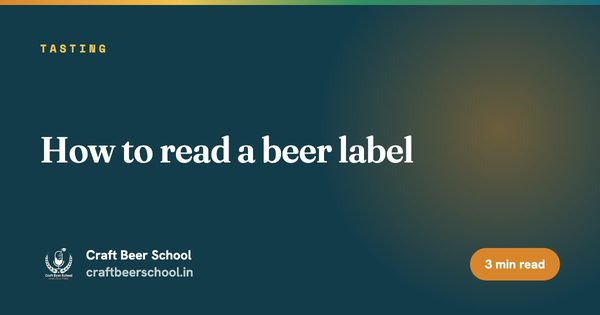
A beer label carries more useful information than most drinkers ever use. Here is what each part is actually telling you.

Golden, strong and dangerously easy to drink. Tripel hides its alcohol better than almost any other beer style manages.

Most beer is ruined at home, not at the brewery. A few small habits fix nearly all of it.

Dried fruit and caramel with almost no roasted malt in sight. Dubbel gets its colour from sugar, not grain.

Peppery, tart, bone dry. Saison is the one style where the yeast, not the hops or the malt, is doing most of the talking.

Of all the beer styles you can buy, the IPA has the shortest shelf life for tasting the way it was meant to. Here is why, and how to catch it in its window.

Copper in the glass, toffee on the tongue. Amber and red ales are what happens when crystal malt is allowed to lead.

Biscuit malt on one side, a wall of citrus and pine on the other. Pale ale is really two families wearing the same name.

A beer that tastes faintly of blood or coins is not making a statement. Something in the path from tank to glass has iron in it that should not be there.

Session IPA promises the hop character of a full strength IPA without the full strength. Pulling that off honestly is harder than it sounds.

One sour beer took a brewer months to make on purpose. The other took one dirty hose to ruin by accident. Here is how to tell them apart.

Double IPA takes everything a regular IPA does and turns every dial up at once, malt, hops and alcohol together, without losing the balance that makes an IPA work in the first place.

Clove is a feature in one glass and a fault in the next. Here is how to tell which beer you are actually holding.

English IPA is where the whole category started, long before American brewers turned it into something louder. It is worth knowing the original before judging the remix.
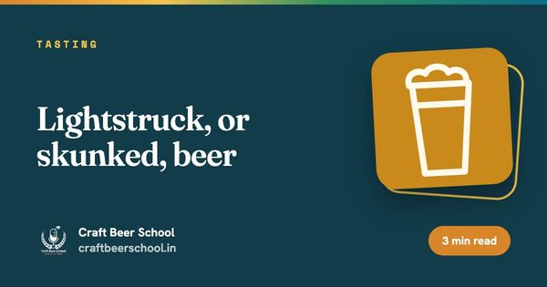
That skunky smell in a beer that sat in a clear or green bottle is not your imagination. It is light doing real chemistry to your hops.

Hazy is not a flaw in this style, it is the entire point. New England IPA turned everything West Coast IPA stood for inside out and drinkers loved it anyway.

Wet cardboard in your pale ale, sherry in your stout. Here is what is actually going on, and why it is rarely the brewery's fault by the time you taste it.

West Coast IPA is the original American IPA template: clear, bitter and unapologetic about it, before the hazy version came along and split the style in two.

Green apple in a finished beer is rarely a flaw in the recipe. It usually means the beer was packaged before it was ready.

Two stouts, two completely different ways of getting a fuller mouthfeel. One uses sugar the yeast cannot touch, the other uses grain that was never meant to ferment cleanly.

Cooked sweetcorn or cabbage in your pale lager usually means one thing: the boil was not doing its job.
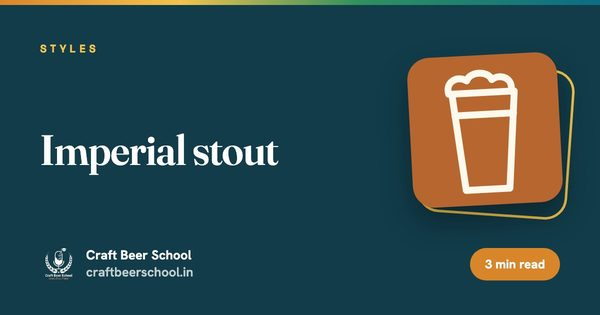
Imperial stout was originally brewed strong enough to survive a sea voyage to the Russian court. Modern versions keep the strength and drop the boat.

Butter, butterscotch, and a slick film on the tongue. Diacetyl is the fault every new brewer meets first.

Dry stout is the beer people think they know from the tap widget alone. The roasted barley underneath the cascading pour is doing most of the actual work.

Porter is the beer that gave stout its name and then spent two centuries being confused with it. Here is the difference that actually matters.
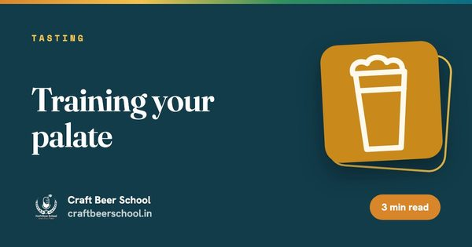
Tasting more beer does not automatically train your palate. Tasting deliberately does.
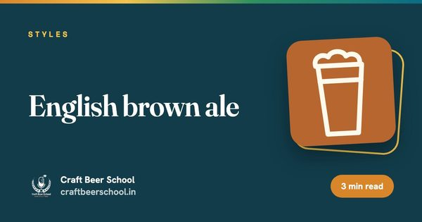
Nutty, malty and quietly built, brown ale is the beer that taught a lot of drinkers that dark does not mean heavy.

Mild was once the most consumed beer style in England. It is now one of the hardest to find in most pubs.
English bitter is named for a bitterness that, by modern hop forward standards, barely registers at all.
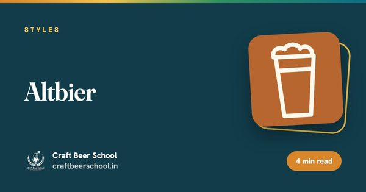
Alt means old, and Dusseldorf's altbier keeps a brewing method most of Germany moved on from, on purpose.

Put a dry lager next to a rich dessert and the beer loses every time. Here is how to actually win that match up.
Kolsch breaks the usual rule that ales are warm fermented and lagers are cold fermented, and the beer is better for the contradiction.

Cheese and beer share a fermentation heritage that cheese and wine never had, and the pairing shows it.
Adding salt to beer sounds like a mistake until you taste a well made gose, where it sharpens everything else rather than tasting salty at all.

Butter chicken and a delicate pilsner is a mismatch. Here is what actually works, and why.
Napoleon's troops reportedly nicknamed this beer the champagne of the north. It is barely 3% alcohol and tart enough to make you understand why they needed a nickname at all.

Wine pairing gets all the attention. Beer is arguably the more flexible pairing partner, if you know the three basic moves.
Witbier almost disappeared entirely in the 1950s. It survived because one retired brewer refused to let it stay dead.
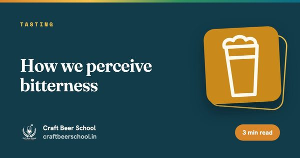
IBU is a number on a lab sheet. What you taste is something else entirely.
The banana and clove in a good hefeweizen do not come from fruit or spice. They come entirely from the yeast, working exactly as it should.
Body is not the same as alcohol strength, and mixing the two up is the most common tasting mistake we see.
The beer craft drinkers love to dismiss is also one of the hardest to brew without a single flaw to hide behind.
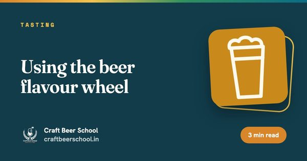
The flavour wheel looks intimidating until you realise it is just your vocabulary, organised.
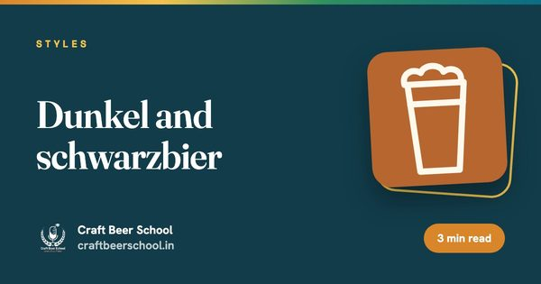
Dark beer does not have to mean roasted or bitter. Dunkel and schwarzbier prove a lager can be dark, smooth and still gentle at the same time.
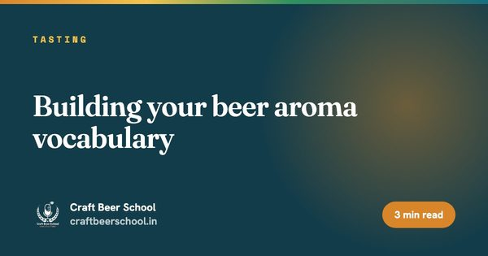
"Fruity" is a start, not a finish. Here is how to get more specific without making words up.
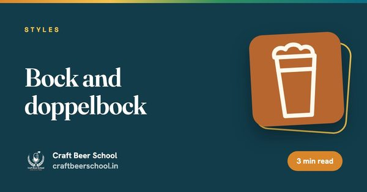
Doppelbock was reportedly brewed by monks as sustenance during Lenten fasting. Whether or not that history is entirely accurate, the beer is still strong enough to double as a meal.

Most bad pours are either too timid or too aggressive. The fix is one tilt-then-straighten motion.
Vienna lager gave the world Vienna malt, then largely vanished from its own city while that malt went on to build half the amber beers in Europe.

Serve everything fridge cold and you will miss most of what you paid for in a good beer.

The beer poured at modern Oktoberfest is not the beer that gave the festival its name. Here is what actually happened.

The same beer in three different glasses will smell like three different beers. That is not a myth, it is physics.

Helles means pale in German, and that plainness is deliberate. This is a beer built to hide absolutely nothing.

Six beers, six glasses, and a plan for the order you pour them in. That is most of the work.
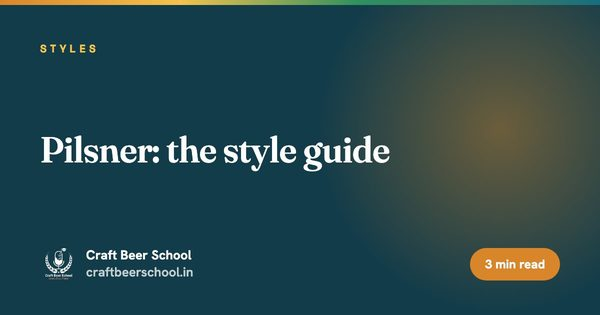
Pale, clear and bitter enough to argue with your food, pilsner is the style every other pale lager has spent two centuries copying.

India's spice cabinet is a genuinely underused brewing ingredient, and it is easy to get the dose badly wrong the first time.

Fruit beers fail more often from timing and sanitation mistakes than from a bad fruit choice.

Brett is either a beloved character strain or a contamination nightmare, depending entirely on whether you invited it in.
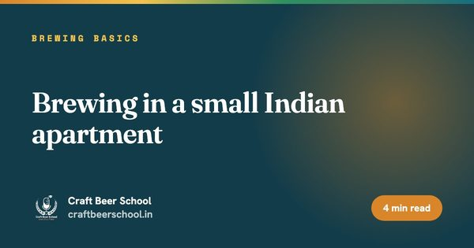
Heat is the real obstacle to homebrewing in an Indian apartment, not space. Solve fermentation temperature first.

The old advice that dry yeast means lower quality beer has not been true for years. Here is what the real trade-off is now.

Memory is a poor substitute for a written record when you are trying to work out why one batch was better than the last.

One ferments warm and fast, the other cold and slow. That single difference explains most of what separates an ale from a lager.

Software will not brew good beer for you, but it will stop you making the same arithmetic mistake on every batch.
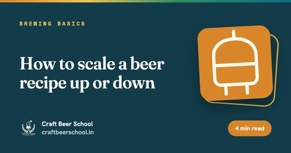
A recipe that works at 20 litres does not simply multiply by 25 to work at 500. Hop utilisation and pitch rate do not scale in a straight line.

A recipe sheet looks like a spreadsheet until you know what each column is actually telling the yeast to do.

Carbonation is a style decision, not a fixed constant. A wheat beer and a cask ale are meant to feel completely different in the mouth.
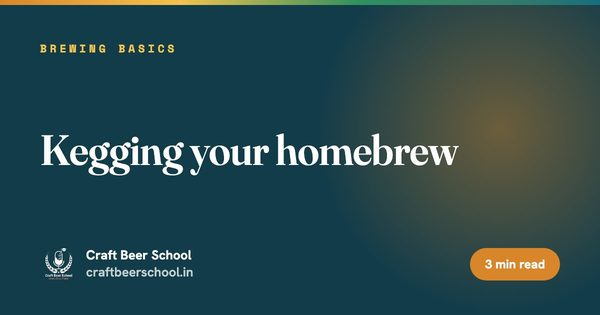
Kegging trades bottling's patience for a bigger upfront setup, and once it is running it saves real time on every batch after.

Water is most of what is in the glass, and it is never really neutral. Here is what the minerals in it actually do to your beer.

Bottle conditioning uses the yeast already in your beer to carbonate it. Get the sugar amount right and it is close to foolproof.

There is no single answer to how long fermentation takes, but there are honest ranges, and a reliable way to check rather than guess.

Fermentation temperature shapes flavour more than almost any other variable, and most Indian homes run too warm for it by default.

Pitching yeast looks like the easiest step in brewing. It is also where a surprising number of avoidable off flavours actually start.
Whole cone hops look more romantic on a brewery tour. Pellets are why most breweries actually use them for brewing.

The hour after the boil ends is a genuine risk window. Getting through it fast protects flavour and keeps unwanted microbes out.
Nelson Sauvin was named for a wine grape because tasters genuinely could not stop comparing it to one.

An hour at a rolling boil is doing at least four separate jobs simultaneously. Here is what each one is, and what goes wrong if you shortcut it.
Cascade did to American beer in the 1980s what almost no single ingredient has done before or since: it gave an entire national brewing scene its own accent.
Mash temperature is the single biggest recipe decision most new brewers underrate. Here is what each range in the mash actually does.

Noble hops built the entire template for European lager, and they did it with alpha acid levels most modern hops would consider unusably low.
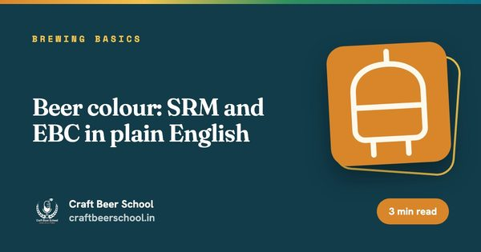
A number on a recipe sheet tells you what colour a beer should be before you have poured a drop. Here is how to read it.
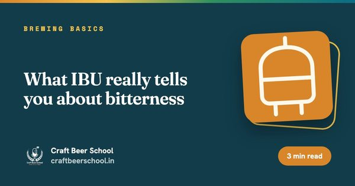
IBU is not a bitterness dial you can read directly off a can. Here is what the number is measuring and what it consistently misses.
Every hop does two jobs, bitterness and aroma, and almost none of them do both equally well.
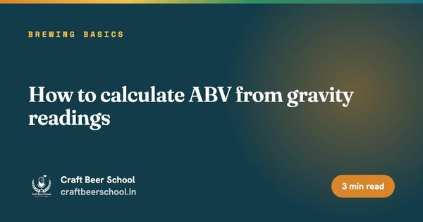
One formula, two gravity readings, and you know your beer's alcohol content to a useful degree of accuracy.

A kilogram of malt and a kilogram of dextrose can both raise your original gravity by the same amount, but only one of them leaves body behind.
Original gravity and final gravity are the two numbers that tell you what happened to your beer between brew day and the glass.
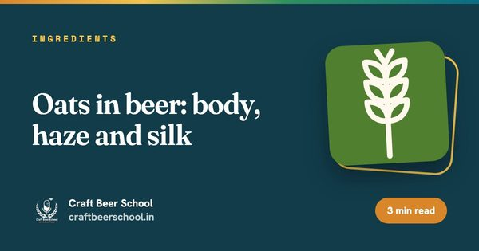
Oats give beer a silky body no other grain quite matches, and a gummy, stuck lauter tun if you are not careful about it.
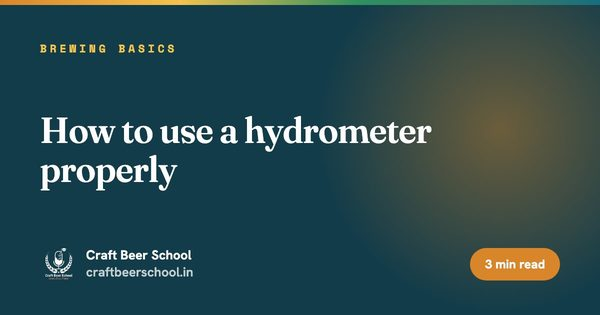
A hydrometer looks simple to use and is easy to use badly. Here is the technique that gets you a reading you can trust.
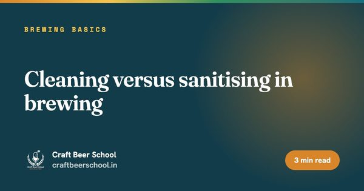
Cleaning and sanitising get lumped together as one chore. They are chemically different jobs, and doing them out of order wastes both.

Wheat malt has no husk of its own, which is exactly why it improves head retention and exactly why it can jam a lauter tun.

Nearly every disappointing first batch fails for one of the same ten reasons. Fix these and your beer jumps several notches immediately.

Chocolate malt, black patent and roasted barley get their colour from something closer to coffee roasting than to brewing.

Brew in a bag turns all-grain brewing into a single-pot method. This is how it works and what actually catches people out.
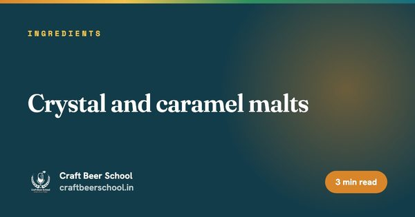
Crystal malt is cooked, not just kilned, and that one difference is why it adds sweetness a base malt never could.
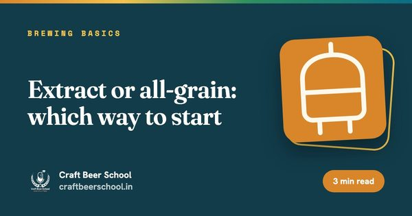
Extract and all-grain make the same styles of beer. They differ in where the sugar-making step happens, and how much control that hands you.

Base malt is the malt doing the actual work of a mash. Everything else in the grain bill is there to adjust what the base malt already built.

You do not need a full kitchen brewery to make good beer. Here is the short list that gets you through batch one.

Malting is farming raw barley into something the mash tun can actually work with, three stages, about a week, and one precise moment that decides the whole batch.
Malt, water, hops and yeast go through five distinct stages before any of it is beer. Here is what happens at each one.
Most brewery dashboards die in a month. The ones that survive show five numbers the head brewer already argues about. Here is how to build that one in Power BI.
Tableau is built for the question a spreadsheet cannot answer: show me every batch of this beer we have ever brewed, on one screen, and point at the odd one.

Butterscotch, cooked sweetcorn, wet cardboard. Each one is a message about something that went wrong upstream.

A recipe that works in Munich does not automatically work in May in India. The variables that change are worth knowing.

A glycol system that is undersized does not fail loudly. It just quietly lets your lager ferment three degrees warmer than you think it is.
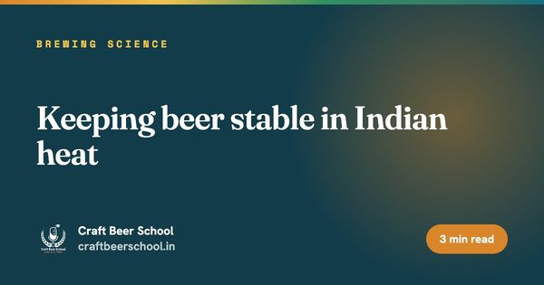
A beer that would sit happily for four months in a European cellar can be visibly tired in four weeks after a Delhi summer delivery run.

A brewery can do everything right and still serve a bad pint, because the line between the keg and the tap has a memory of its own.
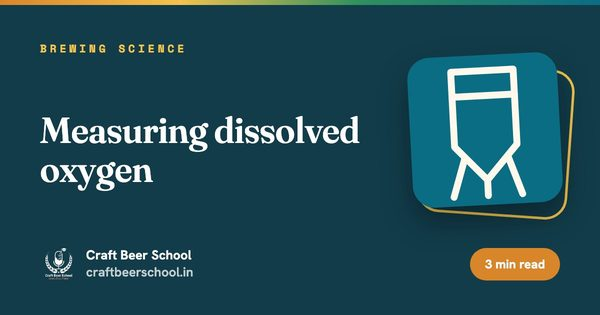
The beer that tastes fine on packaging day and stale six weeks later almost always has an oxygen problem nobody measured.

You do not need a microbiologist on staff to catch most of what goes wrong. You need six pieces of kit and the discipline to use them every batch.

Kveik was bred by farmhouse brewers with no refrigeration at all, which makes it worth a serious look for brewing in Indian heat.

A sensory panel that never changes a brewing decision is a ritual, not a quality tool. Here is how to build one that earns its place on the schedule.

Most infections do not come from a dirty brewery. They come from a clean looking one.

A brewery buying fresh yeast for every single batch is spending money it does not need to spend, if it harvests carefully.

An infection rarely announces itself clearly. It usually shows up first as a flavour you cannot quite explain, and a hygiene gap you have not found yet.

Underpitching is one of the most common, least visible causes of a mediocre beer, and a starter is the cheapest fix available.

Stale beer is not one flavour, it is several reactions layered on top of each other, and most of them are already underway from the moment beer is packaged.

Two identical beers can have very different shelf lives depending on nothing more than how warm they sat in transit.
Most oxidation complaints trace back to the last few minutes before the package is sealed, not to anything that happened during fermentation.
Reverse osmosis water is close to a blank page. That is exactly why it needs a little work before it goes into the mash.
Dry hops bring more than aroma to the fermenter. They carry enzymes that can quietly restart fermentation after you thought it was finished.

Borewell water is the default supply for a lot of Indian breweries, and it is rarely close to a workable brewing profile straight from the ground.

Not all haze is the same problem, and treating a permanent haze like a chill haze wastes time chasing a fix that was never going to work.

One ratio decides whether a beer reads crisp and hoppy or soft and malty, more than almost any other water adjustment.

Good foam is not decoration. It is a measurable interaction between malt proteins, hop acids and whatever is or is not left on the glass.
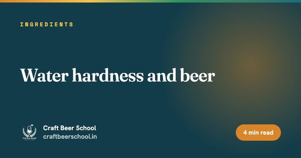
Hard water gets blamed for a lot of brewing faults it did not cause, and credited for balance it does not always give.

A pasteurisation unit is not a temperature or a time on its own. It is the combined effect of both, and getting the balance wrong shows up as flat, stale beer.

You cannot train someone to recognise diacetyl by describing butter. You need actual diacetyl, at a known dose, in their glass.

Filtration buys clarity and shelf stability, but every micron you filter down to also strips a little of the beer's body and character.

Cryo hops and CO2 extracts promise more aroma for less plant matter. They deliver, but not on every beer and not for every reason marketed.

Finings work by giving haze particles something to stick to and fall with, rather than by filtering anything out.
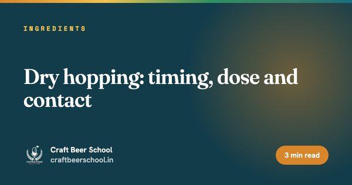
Dry hopping is where a lot of hop budget gets wasted. Get the timing and dose wrong and you pay for aroma that never shows up in the glass.
Three glasses, two the same, one different. It sounds simple, and it is one of the most useful tools in a brewery's quality programme.

Dropping the temperature hard for a day or two clears a beer faster than waiting it out at fermentation temperature ever will.

A hop starts losing its alpha acid the moment it is picked. Everything about hop storage is a fight against that clock.

Fifty points, five categories, one written comment box. Here is what each part is actually asking a judge to do.

Lagering is not just refrigeration with a German name. It is a slow, cold conditioning step that settles the beer and smooths its flavour.

A judge is not just deciding if they like a beer. They are checking it against a written standard.

Diacetyl is not a mystery fault. It is a normal fermentation byproduct that yeast is meant to clean up before you cold crash it away.

Banana, pear, solvent, nail polish remover. All four can come out of the same yeast strain depending on how you run the fermentation.
Yeast does not ferment at a constant rate. It grows, peaks, coasts and declines, and each phase leaves its mark on the finished beer.

Oxygen is the one place in brewing where adding it at the wrong moment ruins the beer, and skipping it entirely does too.

Alpha acids are not bitter until heat rearranges them. That single chemical fact explains almost every hop timing decision a brewer makes.
Adding hops after the boil, while the wort is still hot, gets you aroma without the harsh bitterness a long boil addition would add.
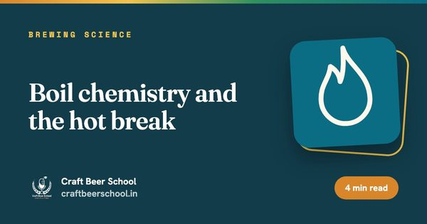
The boil looks simple from the outside. Underneath it, proteins are coagulating, sulphur compounds are escaping and hop acids are being reshaped.

Two breweries can report the same recipe and get different beers, because efficiency is where the recipe meets the real equipment.

The wort stops moving, the underlet valve is wide open, and the clock is running. Here is what to check first.
Rice and maize are not shortcuts in Indian brewing, they are the reason most Indian lagers taste the way they do.

Lautering is the step most homebrewers rush, and the step most likely to quietly cost you efficiency if you do.

Decoction mashing solved a problem that modern malt has largely solved on its own, which is why it survives now mostly for flavour rather than necessity.

Most modern homebrew recipes do not need step mashing, and knowing when yours actually does saves a lot of wasted brew day time.

Mash temperature is not one setting, it is a dial between two enzymes with opposite preferences, and that dial decides how dry or how full your beer finishes.
Mash pH is the single most consequential number in the entire brewing process, and one of the least checked.

A licence change in one state started it. Everything after that was taprooms, heat and a generation that wanted choice.
The brewhouse is the easy part. Licensing, cooling and working capital are what decide whether you open.
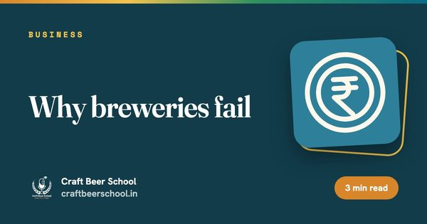
Breweries rarely fail because the beer was bad. They fail because of the business built around the beer.

Rent is the number everyone compares first. It is usually the least important number on this list.
Breweries are equipment-heavy and licence-slow, which shapes what kind of money actually wants to fund one.

The Indian craft beer market has been shifting for years, mostly quietly, mostly in the same few directions.

Sustainability in a small brewery is mostly about using less of the expensive things twice, not about a certification on the label.
Spent grain is the easy part. Effluent is the part that actually needs planning.

A brewery is, underneath everything, a water and power business. Get either wrong and the recipe stops mattering.
A five-barrel brewery does not need ten people. It needs the right four or five, wearing the right combination of hats.
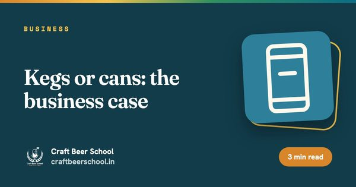
Kegs and cans are not really rival technologies, they are two different businesses wearing the same beer.
Same beer, two completely different businesses. Choosing where to sell it first changes almost everything else about how you run the brewery.
Distribution, not brewing, is where most small Indian breweries lose money or momentum. Here is the map of how beer actually moves.

No single office issues everything a brewery needs. Here is the full spread, grouped so you know who to call for what.

The brewhouse you can afford and the brewhouse you actually need are rarely the same size. Sort that out before you sign a purchase order.
Two regulators, two licences, two inspectors. FSSAI does not replace your excise licence, it sits alongside it.

Beer is taxed by the states, not by Delhi, and that single fact explains almost everything strange about pricing it in India.
A brewery business plan is not a pitch deck with a beer on the cover. It is the document that forces you to answer the questions that actually sink new breweries.

A taproom looks like the fun part of the business. Run the numbers and it is usually the highest margin part too, if you treat it like a business rather than a bonus room.

Pricing is not marking up your cost per litre and hoping. It is a decision about who you are selling to and what channel is actually carrying your margin.

Most new breweries price their beer off a gut feeling, then wonder why the margin never shows up. Here is the arithmetic that actually holds.

A brewhouse too small chokes your growth. A brewhouse too big drains cash every month it sits under used. Both mistakes look identical for the first year.

Anyone who quotes you a single confident number for opening a microbrewery is skipping the part where it depends entirely on your choices.

Some of the most celebrated beers in the world were never brewed by a brewery that put its name on the can. Here is how that works.
You can put your beer on shelves without owning a single tank. Here is how that arrangement actually works, and what you give up.

The two terms get used almost interchangeably, but the licence, the floor plan and the business model behind them are not the same thing.

The licence is not one document. It is a stack of approvals from different departments, and every state stacks them differently.
Sending free beer to whoever has the most followers is not a strategy, and it rarely produces content worth the cost of the beer itself.

Packaging is often the second biggest line item after ingredients, and most new breweries underestimate it badly until the first invoice arrives.

A limited release that never actually sells out, or one that appears every other month regardless of season, stops meaning anything special fairly quickly.
A beer brand that tries to appeal to everyone usually ends up meaning nothing to anyone in particular, and that is the actual risk, not being niche.

Most brewery merchandise racks are full of stock nobody wanted, ordered in the wrong sizes, in colours that do not match the brand, and forgotten within a month.

A quiz night once is an event. A quiz night every second Thursday is a reason to keep coming back, and that difference is the whole point.
Most beer launches fail quietly, not because the beer was wrong, but because nobody outside the brewery knew it existed on the day that mattered.

Most brewery social media accounts post the same can photo with a different filter. Here is what to post instead, and why.
You cannot run a beer television advert in most of India. Here is what that actually restricts, and what it leaves open.
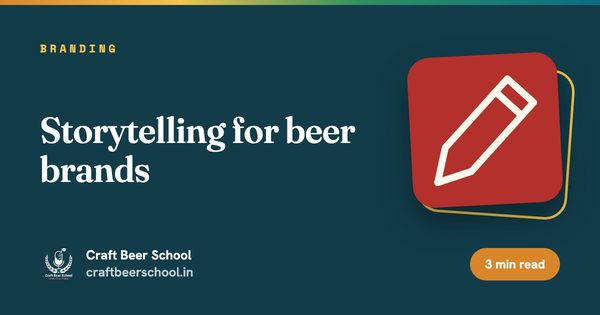
Every brewery says it is passionate about beer. That is not a story, it is a category description.
A can is not a flat rectangle that happens to curve. Designing it like one is the most common mistake on the shelf.
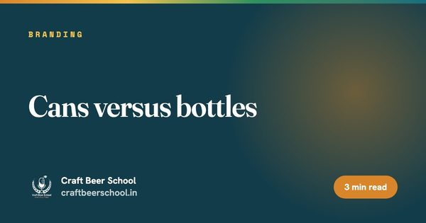
Cans and bottles do not just carry beer differently, they say something different about the brand carrying them.
A beautiful label that fails state label approval is a beautiful label you cannot legally sell.
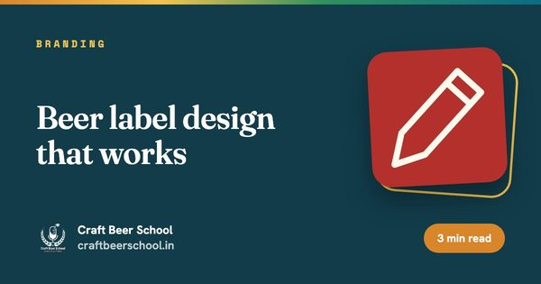
A label has about two seconds to do its job. Most of that time gets wasted on decoration instead of information.
A great beer name that nobody can trademark, pronounce or legally print is not actually a great beer name yet.

It is a production job with a science base and an early alarm. Here is the honest route in.

You do not need to know how to brew to sell beer well. You need to understand the product, the accounts and the numbers behind both, and that is a learnable set of skills.

Homebrewing teaches you real fermentation science, but a five gallon batch and a five hundred litre one behave differently in ways that surprise a lot of confident homebrewers.
A beer sommelier is not a brewer with a fancier title. It is a distinct skill built on tasting, describing and pairing beer accurately, and it opens doors a brewing job does not.

The job listing says fermentation and quality control. The actual day is a lot of lifting, cleaning and paying close attention to numbers most customers never see.

A brewery is not just a head brewer and some kegs. It is a small factory, a lab and a hospitality venue, and each of those needs different people doing different work.

Ask ten brewers whether you need a degree and you will get ten different answers, mostly based on how they got in themselves. Here is what actually changes between the two paths.

A BJCP judge is not just someone with an opinion about beer. It is someone trained to score a specific beer against a specific style, consistently, under time pressure.

WSET is best known for wine, but its beer qualification brings the same structured, systematic tasting approach to a category that badly needed one.

Cicerone is often called the sommelier certification for beer, but it is really built for the floor: serving, storing and selling beer properly.
Cicerone, WSET and BJCP get lumped together constantly, but they test different skills for different reasons, and mixing them up wastes time and money.

Nobody can run a 10 hl brewhouse by phone. The real choice is who stands on the floor and who stands behind them.

AI cannot taste your beer. It can tell you how much lager to brew next month, if your sales data is in order.

Multiply the pilot recipe by twenty and you get a different beer. Here is how to scale it properly.
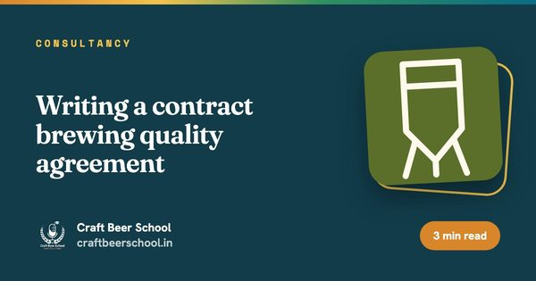
Both sides want the same beer until a batch comes out different. Write down who decides before that happens.

There are only a few ways to take alcohol out of a drink. Each one leaves a different fingerprint on the flavour.
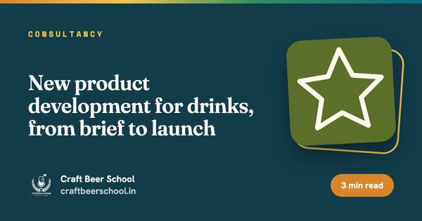
Most new drinks fail before launch, on the label or in the warm warehouse. A short process catches that early.
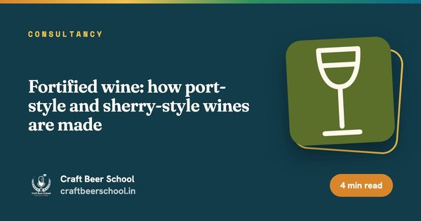
Port and sherry are both wine plus spirit. The difference is when the spirit goes in. That changes everything.
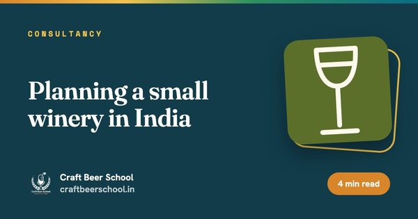
One harvest a year, grapes ripening in the heat and a licence that differs by state. Plan for all of it before you buy a press.
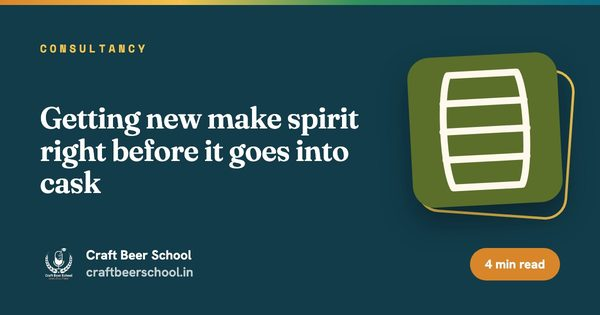
A cask cannot fix a bad spirit. It can only make it older.
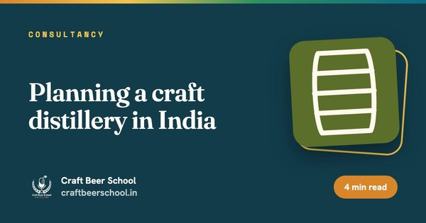
A distillery is a brewery with a still, a bonded warehouse and a cash flow problem. Plan for all three.

Hard seltzer looks like the easiest drink to make. A clear, neutral base is harder than it looks.
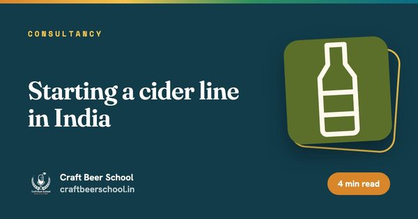
Your brewhouse can make cider. The hard parts are the fruit, the sweetness and the licence.
You do not need a lab or a quality manager. You need a one-page spec per beer and checks your team actually does.

Do not start with the menu or the decor. Start by finding out which kind of trouble you are in.

Monthly accounts tell you what went wrong six weeks ago. A one-page weekly sheet tells you while you can still act.

The beer everyone wants runs dry on Saturday while a tank of the one nobody orders goes stale. Your sales data can fix that.
Every brewery loses beer between kettle and till. The question is how much, where and whether anyone has measured it.
Sales are flat or the IPA tastes different every batch. A health check finds out why before anyone changes a recipe.
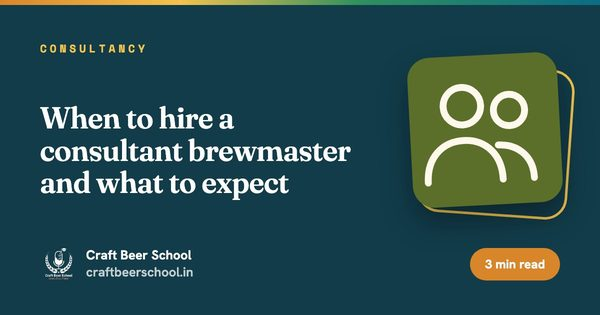
Too early and there is nothing to fix. Too late and the regulars have gone. Here are the moments that matter.
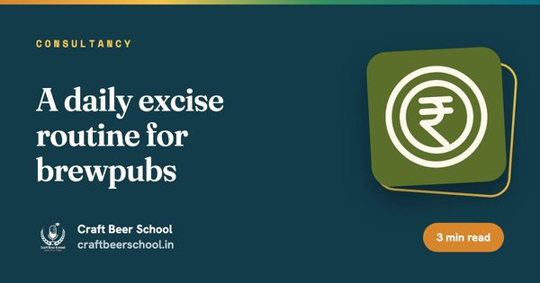
Reconcile daily and a gap is a ten-minute question. Reconcile monthly and it is a week of detective work.
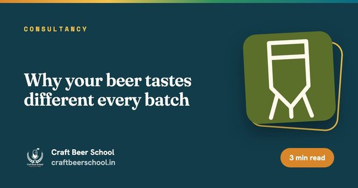
Same recipe, different beer. The cause is almost always in a short list. Your batch records can find it.
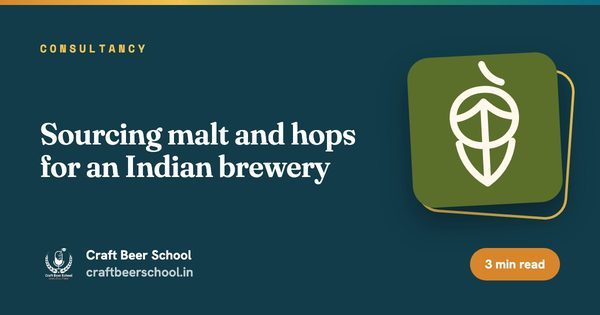
Most craft malt and every hop arrives by sea through a hot port. Here is how to make sure it is still worth brewing with.
Pale malt, noble hops and nowhere to hide. Here is how to make a German lager behave in Indian heat.
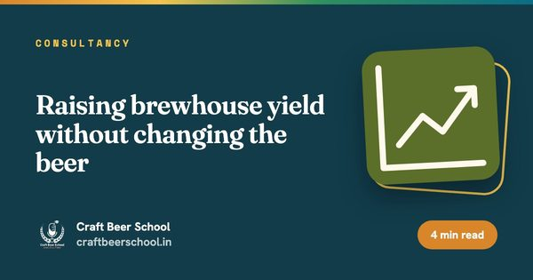
Every kilo of malt you fail to extract is money already spent. Here is where small brewhouses lose it.
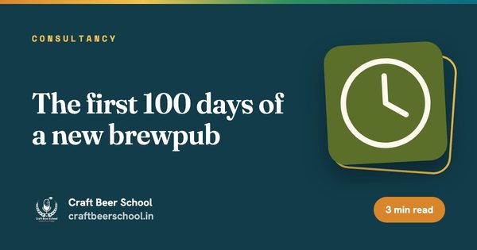
The habits you build in the first three months are the ones you keep. Here is the order to build them in.
The fabricator says it is finished. Here is what to prove before a single kilo of malt goes in.

In a drinks company, excise can be a bigger number than the cost of the liquid. Here is how it moves through your books.

A litre of beer uses several litres of water. Most of it never goes into the beer. Here is where it goes instead.
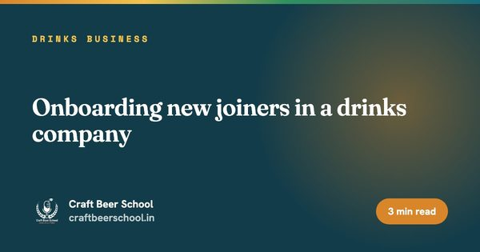
Laptop, ID card, policy videos. Then a new joiner sits down to forecast a product they have never seen made.
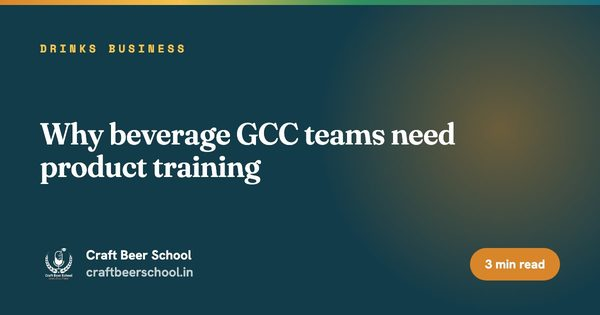
Your GCC team can build a flawless report on a product nobody in the room has seen being made. That is the problem.

The useful AI projects in a drinks company start with a tank, a cask or a vineyard. The failed ones start with a model.

A good workplace tasting teaches the portfolio. Nobody should leave it any different from how they arrived, apart from better informed.

Why can a beer sell in one state and not the next? Because in India each state writes its own rules for alcohol.

Beer takes weeks, wine waits for one harvest a year and whisky sits in a cask for years. That difference runs your whole planning calendar.
Musty, vinegary, cooked or flat. Each fault points to a different place in the chain and to a different fix.

Two labels, same grape, very different wines. The split between Old World and New World explains why.

Chilli and a big tannic red make each other worse. Here is what works instead and why.

A wine can leave the winery in perfect shape and arrive cooked. Most of the damage happens in transit and on the shelf.
Your dashboard says litres per tonne fell by 4 percent. Here is what that might mean in the cellar.
A wine label packs a lot into a small space. Once you know the code, most of it is easy to read.
You do not need to smell wet slate or forest floor. You need a method, a spit cup and an honest sentence.
In beer, a planner who gets the forecast wrong brews again next month. In wine, the answer arrives next year.
India grows wine grapes in the tropics, which should not work. Here is how growers make it work.
Nine grapes cover most of what you will see on a wine list or a sales report. Here is what each one tastes like.
Same grapes, four very different wines. The difference is mostly about skins, time and bubbles.
Beer can be brewed any week of the year. Wine gets one go. It starts in a field.
No two casks taste the same. A whisky brand has to taste the same every year. The blender sits in between.

Most Indian whisky starts as neutral spirit from molasses or grain. The choice shapes taste, export rules and the cost line.

Why does a distillery report litres of pure alcohol instead of litres? Because the bulk volume keeps changing while the alcohol mostly does not.

Whisky tasting is mostly smelling. Done properly, nobody needs to swallow a drop.
A 12 year old can contain whisky much older than twelve. A small batch can be large. Here is how to read the label.
In India one whisky brand is really thirty separate businesses, one per state. Here is why.
The 12 year old you sell in 2038 has to be filled this year. Whisky planning starts from that uncomfortable fact.
Every cask loses spirit to the air each year. In India it loses a lot more and matures faster for the same reason.

New make spirit goes into the cask clear and fiery. Years later it comes out amber and calm. Here is what the wood did.

Each country's whisky is defined less by taste than by a rulebook. Learn the rules and the flavours start to make sense.

Single malt does not mean one cask. Grain whisky is not neutral spirit. Most whisky is a blend of the two.
The first half of making whisky looks a lot like brewing beer. The second half takes years.

The forecast was fine. Then it was 42 °C for ten days, a state revised prices and there was a dry day. Here is how to model that.

If your brief says "crisp, refreshing lager", it helps to know what makes a lager crisp. A style primer for marketers.

Wort, Plato, CCT, bright beer, depletions. The words you will hear in your first week, explained once.

Shipments went up. Depletions went down. Both numbers are right. Here is why.

Mainstream, strong, premium, wheat, alcohol free. Every brand in a beer portfolio has a job to do.

The packaging line is where breweries lose most of their hours. OEE is how they count them.

Your quality table has forty columns. About eight of them decide whether the beer ships. Here they are.
The bottle often costs more than the beer inside it. Here is how a beer cost sheet really breaks down.
Your plan says brew 400 hectolitres more. The fermenters say otherwise. Here is how brewery planning really works.
A bottle of lager has passed through a farm, a maltings, a brewery and a state depot. Here is the route.
Extract yield, beer loss, hl/hl water. What the numbers in your brewery dashboard are actually measuring.
You build the dashboards for a beer company. Here is what actually happens behind every row.
Every guide here is a slice of what we teach properly, with mentors, tastings and real brewhouse time.
See the courses